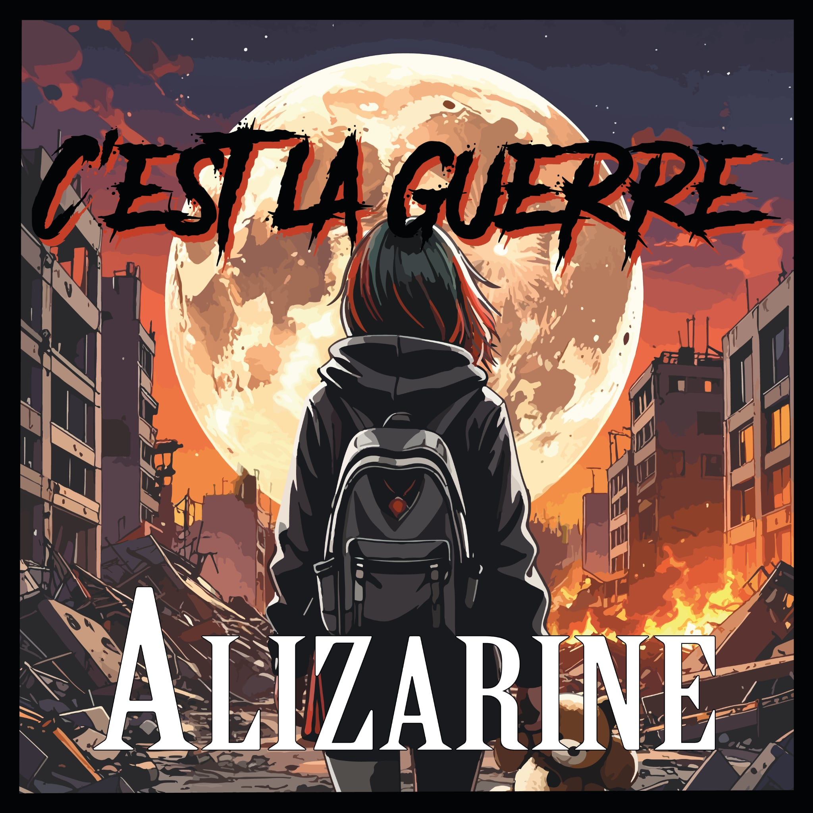

Résistance

C'est notre tout premier album enregistré en condition live, au Silo, et pré-mixé par Boris. Une première trace de notre univers musical.
Liste des morceaux
- Appartement 727
- Désobéissance
- Pink Sheep
- HP
- Harcelée
- Résistance
- Amanda
- A toi...
- Iranienne
- Alizarine
ÉCOUTER
C'est la guerre

C'est notre 2ème album, enregistré piste par piste, à la maison, mixé par Alizarine en DIY et Masterisé par Matthieu.
Liste des morceaux
- Bleed or Die
- Des Nanards
- A toi... acoustique
- Point de rupture
- Vimy (C'est la guerre)
- Gueuler
- Amour interdit
- 3615 1312
- Emeute